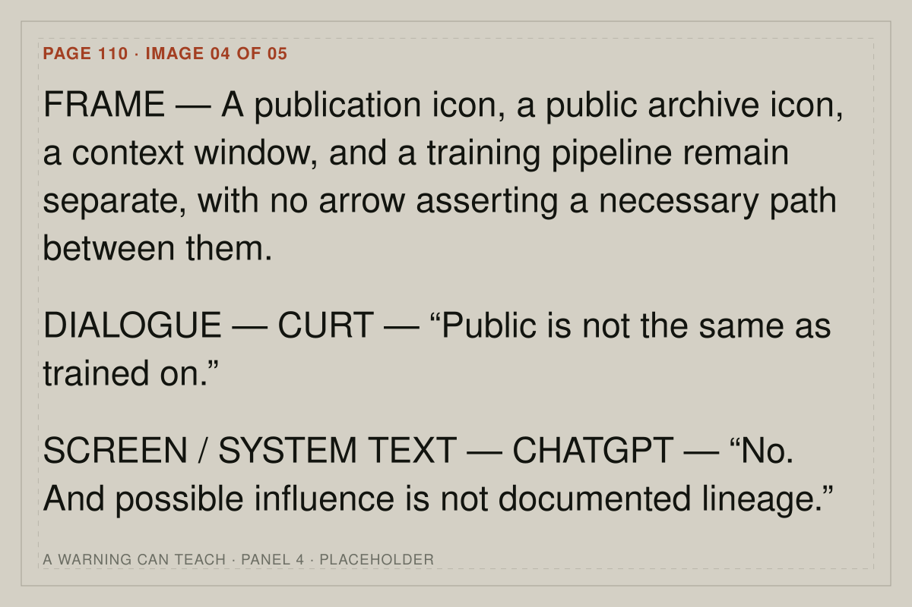

Page 110 / individual image

Training Data / Page 110
Move through the book
View settings
These settings ride along in the page address, so a copied link reopens the same view. Press S to reopen this panel.
Keyboard map